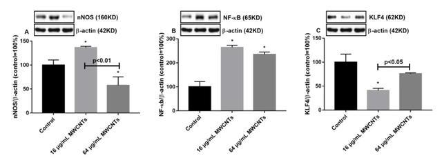
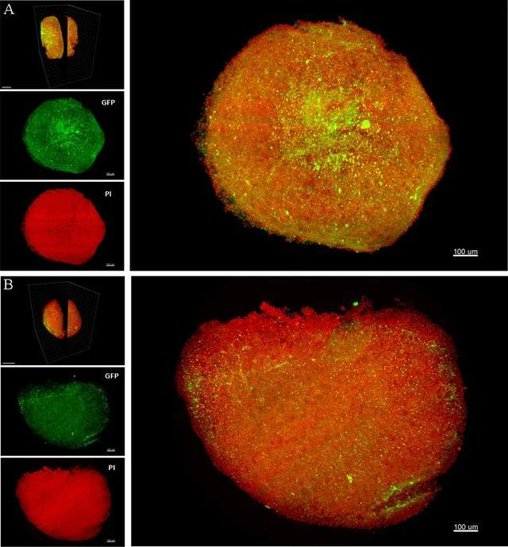

3D-brain Ⅰ

摘要
2020年8月8日，湘潭大学化学学院曹毅博士课题组在 Science of the Total Environment (影响因子6.551)发表研究论文 “Multi-walled carbon nanotubes decrease neuronal NO synthase in 3D brain organoids”，应用三维成像技术实现了对一种新型人3D类脑中的特定蛋白空间分布的成像。
背景
团队利用了一种新型的3D人类脑模型来分析碳管对神经系统一氧化氮活性的影响，发现高浓度的碳管能降低神经型nNOS的活性，进而导致类脑中一氧化氮产生量不足，但传统毒理学分析手段并不能提供空间分布信息，无法确定类脑对多壁碳纳米管暴露最敏感的部位。

三维重建
在与三维成像技术相结合后，研究人员得以分析多壁碳纳米管暴露以后nNOS在全类脑的分布，发现这种影响不仅仅发生在类脑的外层细胞，也发生在类脑的内部，这表明碳管的作用是整体的。

个人贡献：图像处理及三维建模分析。